Design leadership isn't about the deliverable — it's about building the conditions where great work becomes inevitable. I invest in clarity, community, and the careers of the people around me.
After a new role definition rolled out across Designers in Sales, the design community was overwhelmed — the language was high-level and abstract when people needed something grounded, specific, and usable on a Tuesday.
I heard that frustration surface, saw it get elevated to me, and responded with a set of scenario-based STAR-method behaviors across six key categories. Each one walked through the situation, task, action, and ideal result — translating enterprise language into the everyday scenarios designers actually live in.
Rolled it out at the town hall. Closed with a simple Microsoft Teams poll. The community confirmed it landed. That's the feedback loop that matters.
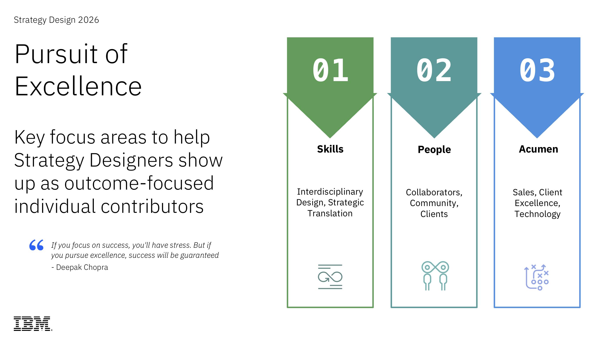
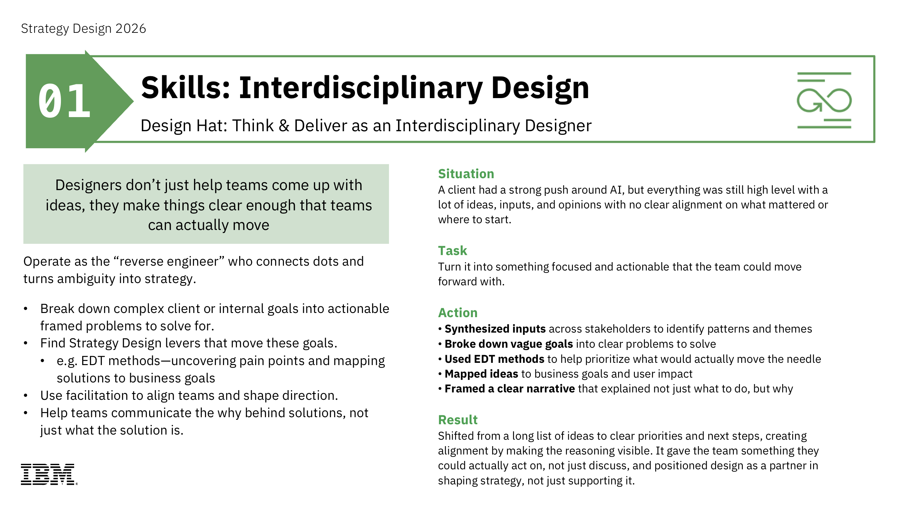
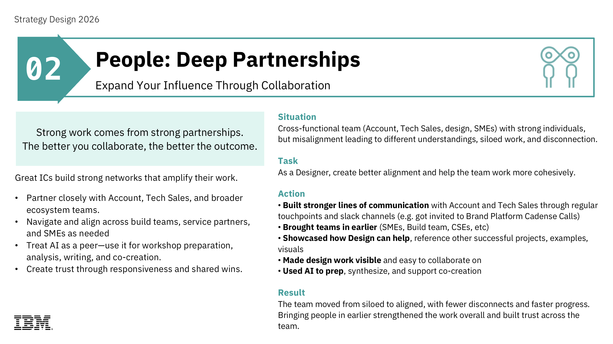
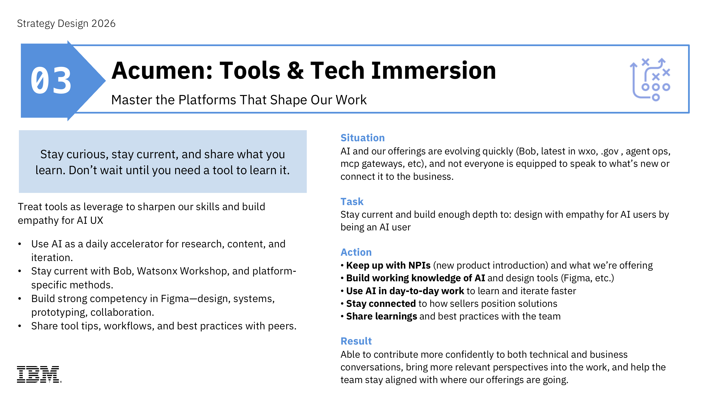
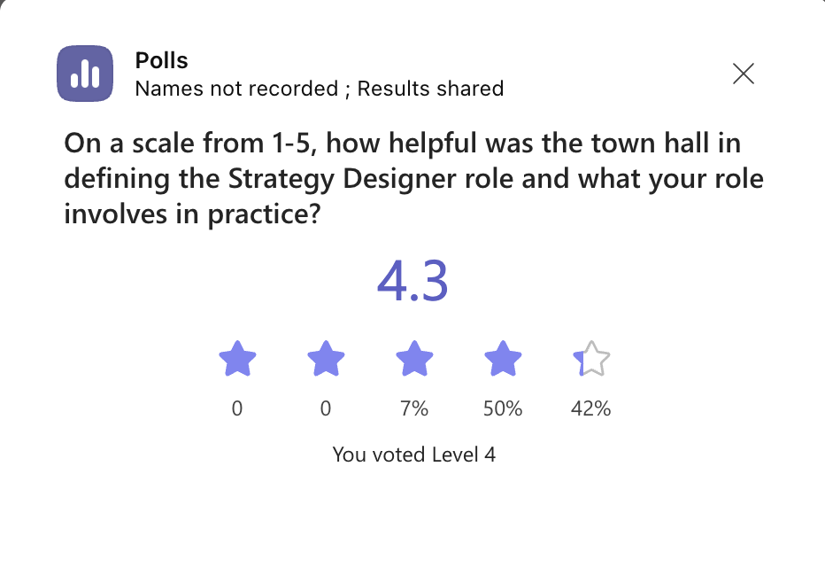
Designers across IBM were asking the same questions with no clear answers: What roles exist beyond mine? What skills do I actually need? Are adjacent design paths even realistic from where I stand?
I led a deep research process to map the entire IBM design landscape — core design options, adjacent-design roles, the skills each requires, and critically, what the shift would actually look like compared to where designers are today. That comparison is what made the difference. Not just a list of roles — a real picture of the distance between here and there.
Scaled to 200+ Innovation Designers worldwide in 2025. A long-term guide that will support the CE design community for years to come.
Account Technical Leaders own the full context of their client accounts. What they often lack is the storytelling precision to distill the right information, to the right audience, at the right moment — the kind of clarity that wins a competitive bake-off or earns a spot on a client's trusted advisor list.
I was invited to speak at the 2026 ATL Onboarding event in Austin, Texas by IBM's VP of Technology Sales to give them exactly that. A practical framework they could use immediately — in the room, on the call, in the pitch.
Equip ATLs with storytelling skills that make or break the competitive moment. Invited directly by the VP of Technology Sales — because the right voice in the room matters.
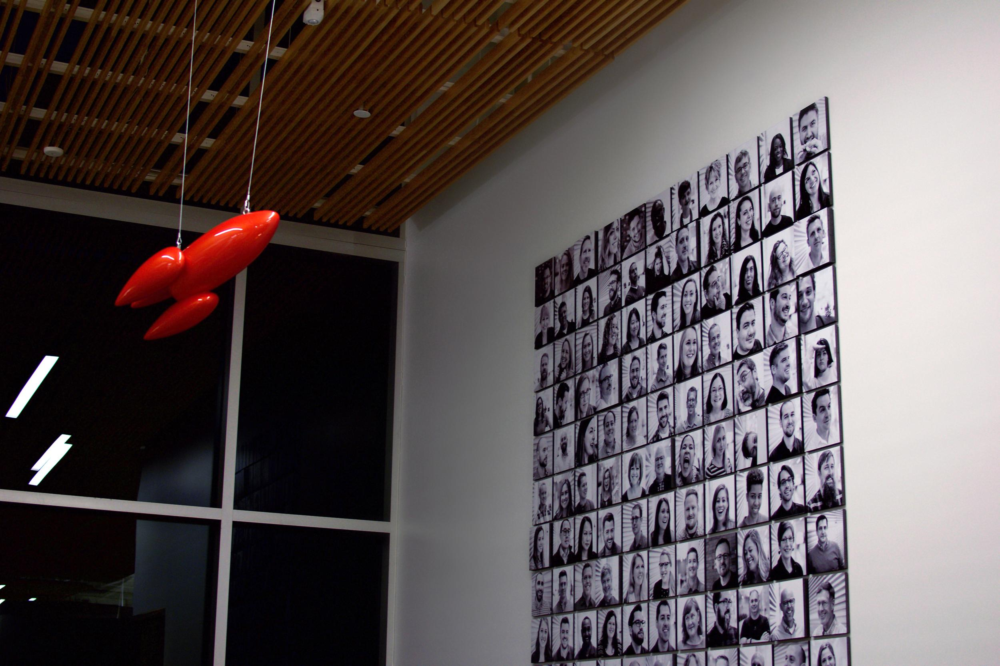
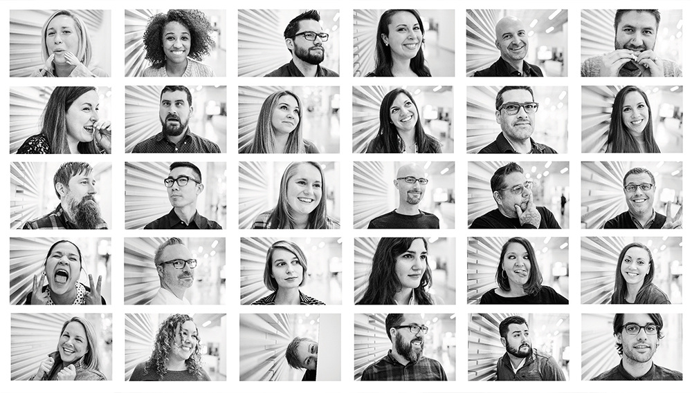
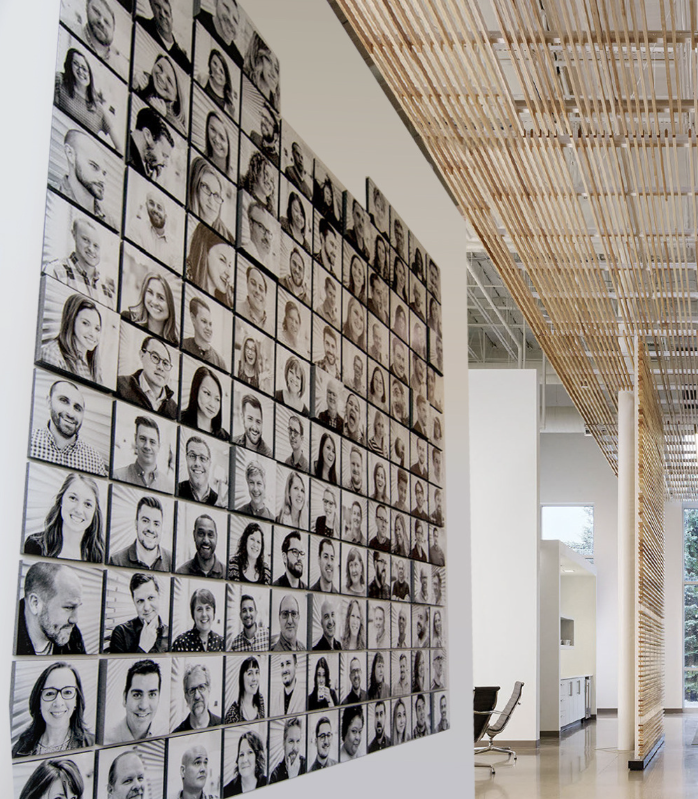
Some of the most lasting design work isn't on a screen. It's on a wall.
Over 100 employee portraits were printed, mounted individually, and combined into a modular grid displayed in the office atrium — making visible the people who make the culture what it is.
What happened next was the best kind of unplanned outcome: design teams started pulling the portraits into project decks. A way to recognize the people behind the work had become part of how the work got told.
Not just a wall. A cultural artifact — a way for an organization to see itself and feel proud of what it sees.
The best leaders I ever had sent me places I wouldn't have found on my own. I made it my job to do the same. I advocated, wrote the emails, built the business cases, and got budget approved — so 15 designers across six markets could have the kind of conference experiences that change how you see your craft and your career.
Sent 11 designers to Adobe Creative Jam — a high-energy, skills-building creative competition that puts design chops to the test alongside peers from across the industry. I coordinated across markets, built the case for budget, and made it happen.
Sent 4 designers to Config, Figma's flagship design conference — the room where the design community's next moves get made. One designer per market, representing the breadth of how we work across IBM.
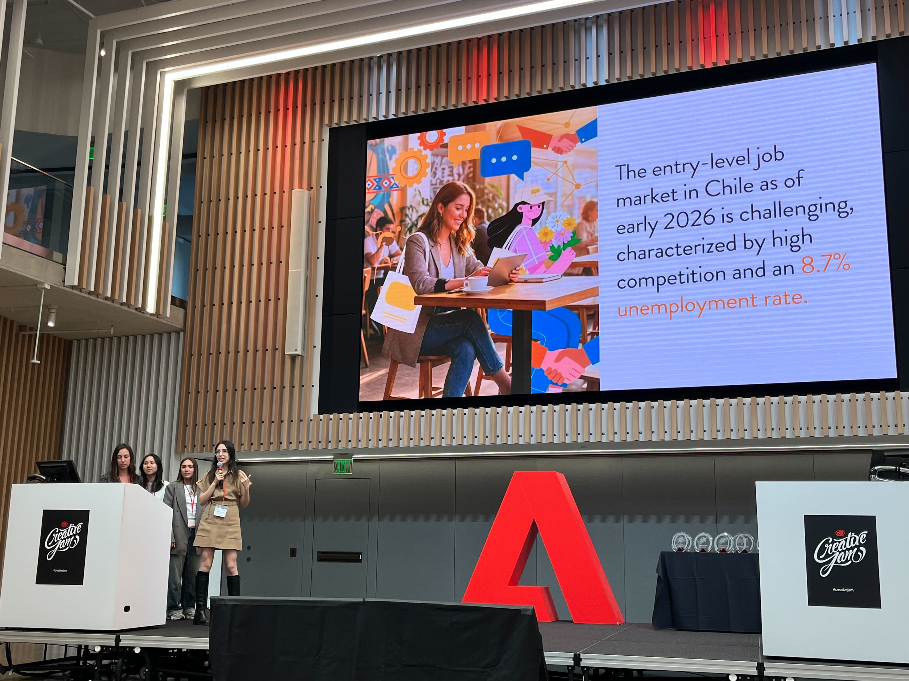
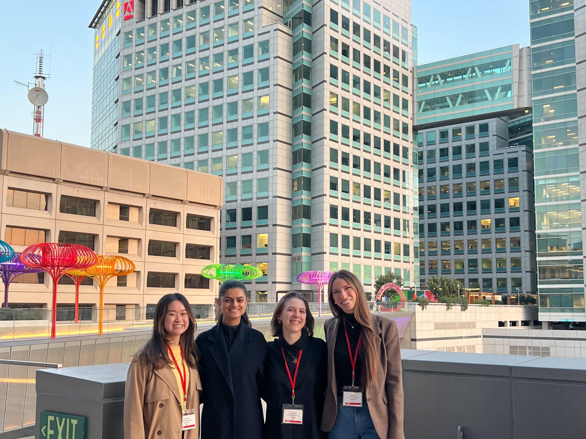
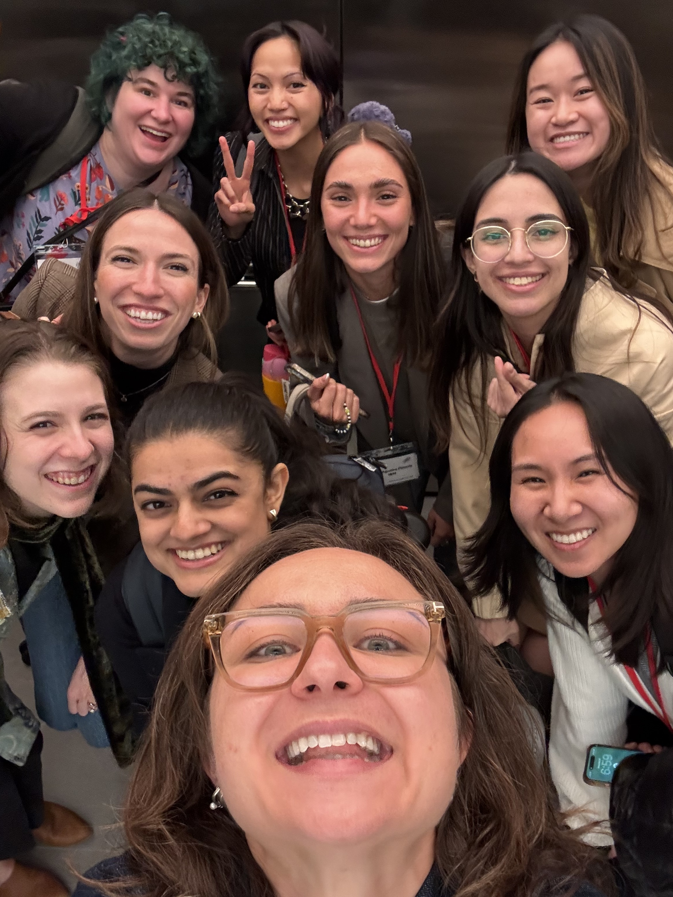
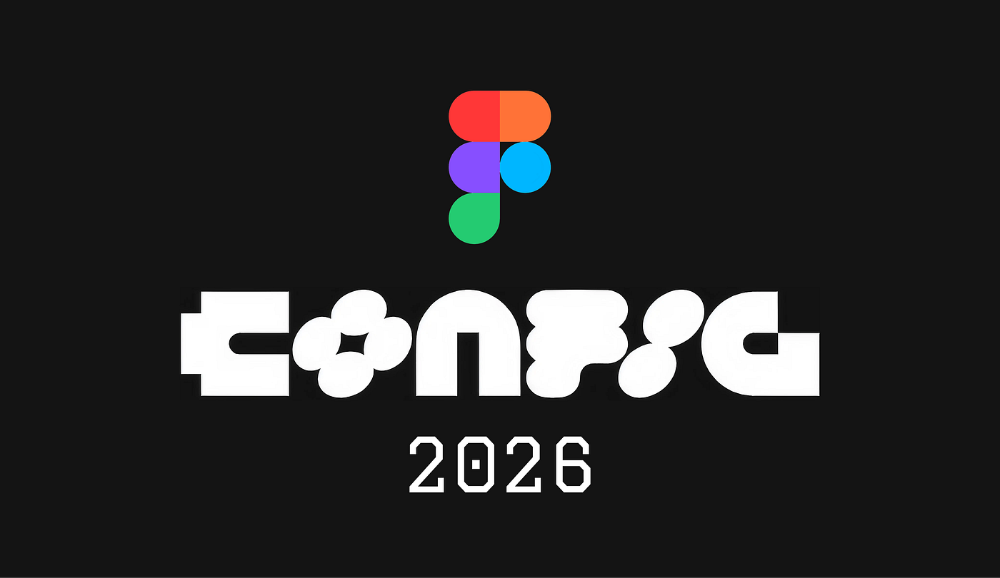
"THANK YOU THANK YOU THANK YOU for advocating for us to participate in this event. One of my top three experiences in my 7 years at IBM. Truly career changing and invigorating. It's such an amazing partnership we get to have and I look forward to leaning into it more and working with Naved."
"Katie — Thank you so much for all the energy, passion, expertise, and integrity you bring to the Americas Design Lead role. I appreciate you consistently leading with empathy and collecting perspectives from across the markets. The momentum and focus on meaningful impact in our initiatives is exactly what we need right now. Thank you again for everything you're bringing to the team."
"Katie, I wanted to take a moment to recognize the exceptional work you're doing leading the Americas GEO, and the way you consistently support, contribute to, and collaborate across all our worldwide initiatives. Your partnership, clarity, and energy elevate everything we do. The way you bring clarity, structure, and confidence into every conversation makes collaboration so much easier and more impactful. Whether we're aligning as a design leadership team or speaking with leaders like Rahul, your ability to articulate our work, connect the dots, and create shared understanding truly elevates us. And of course, your leadership of the Career Progression initiative for CE Designers deserves special recognition. The pages you've created are thoughtful, rigorous, and incredibly valuable — a long-term guide for the entire CE design community. You've built something with incalculable value that will support designers for years to come. Thank you for the dedication, calm, and purpose you bring to every initiative. Your impact is lasting, and your way of navigating complexity with collaboration and clarity is inspiring. It's a true pleasure working with you. I deeply appreciate everything you do for the CE design community — honestly, I don't know what I would do without you."